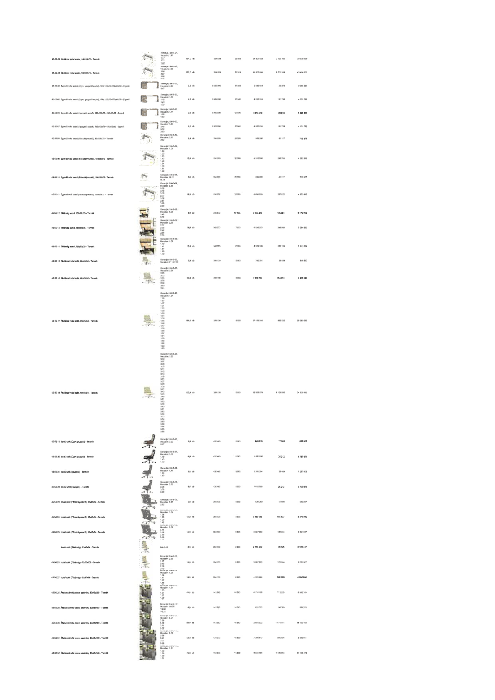

| Tétel | Megjegyzés | Menny. | Egys. | Anyag e.ár (net HUF) | Díj e.ár (net HUF) | Anyag összesen (net HUF) | Díj összesen (net HUF) | Anyag+Díj összesen (net HUF) |
|---|---|---|---|---|---|---|---|---|
| 45-50-02 Általános irodai asztal, 160x80x75 - Termék | Konszig jel: BM-5-01.1 | 104,0 | db | 334 630 | 20 559 | 34 801 523 | 2 138 105 | 36 939 628 |
| 45-50-03 Általános irodai asztal, 160x80x75 - Termék | Konszig jel: BM-5-01.1 | 128,0 | db | 334 630 | 20 559 | 42 832 644 | 2 631 514 | 45 464 158 |
| 45-50-04 Egyedi irodai asztal (Ügyv. Igazgatói asztal), 180x110x75+120x60x50 - Egyedi | Konszig jel: BM-5-02 | 2,0 | db | 1 005 006 | 27 940 | 2 010 012 | 55 879 | 2 065 891 |
| 45-50-05 Egyedi irodai asztal (Ügyv. Igazgatói asztal), 180x110x75+120x60x50 - Egyedi | Konszig jel: BM-5-02 | 4,0 | db | 1 005 006 | 27 940 | 4 020 024 | 111 758 | 4 131 782 |
| 45-50-06 Egyedi irodai asztal (Igazgatói asztal), 180x100x75+120x60x50 - Egyedi | Konszig jel: BM-5-03 | 3,0 | db | 1 005 006 | 27 940 | 3 015 018 | 83 819 | 3 098 836 |
| 45-50-07 Egyedi irodai asztal (Igazgatói asztal), 180x100x75+120x60x50 - Egyedi | Konszig jel: BM-5-03 | 4,0 | db | 1 005 006 | 27 940 | 4 020 024 | 111 758 | 4 131 782 |
| 45-50-08 Egyedi irodai asztal (Főosztályvezetői), 180x80x75 - Termék | Konszig jel: BM-5-04 | 2,0 | db | 334 630 | 20 559 | 669 260 | 41 117 | 710 377 |
| 45-50-09 Egyedi irodai asztal (Főosztályvezetői), 180x80x75 - Termék | Konszig jel: BM-5-04 | 12,0 | db | 334 630 | 20 559 | 4 015 560 | 246 704 | 4 262 265 |
| 45-50-10 Egyedi irodai asztal (Főosztályvezetői), 180x80x75 - Termék | Konszig jel: BM-5-04 | 2,0 | db | 334 630 | 20 559 | 669 260 | 41 117 | 710 377 |
| 45-50-11 Egyedi irodai asztal (Főosztályvezetői), 180x80x75 - Termék | Konszig jel: BM-5-04 | 14,0 | db | 334 630 | 20 559 | 4 684 820 | 287 822 | 4 972 642 |
| 45-50-12 Titkársági asztal, 160x80x75 - Termék | Konszig jel: BM-5-05.1 | 5,0 | db | 414 688 | 21 160 | 2 073 438 | 105 801 | 2 179 239 |
| 45-50-13 Titkársági asztal, 160x80x75 - Termék | Konszig jel: BM-5-05.1 | 14,0 | db | 345 573 | 17 633 | 4 838 023 | 246 868 | 5 084 891 |
| 45-50-14 Titkársági asztal, 160x80x75 - Termék | Konszig jel: BM-5-05.1 | 16,0 | db | 345 573 | 17 633 | 5 529 169 | 282 135 | 5 811 304 |
| 45-50-15 Általános irodai szék, 65x45x54 - Termék | Konszig jel: BM-5-06 | 3,0 | db | 264 130 | 8 803 | 792 391 | 26 409 | 818 800 |
| 45-50-16 Általános irodai szék, 65x45x54 - Termék | Konszig jel: BM-5-06 | 29,0 | db | 264 130 | 8 803 | 7 659 777 | 255 291 | 7 915 067 |
| 45-50-17 Általános irodai szék, 65x45x54 - Termék | Konszig jel: BM-5-06 | 104,0 | db | 264 130 | 8 803 | 27 469 544 | 915 525 | 28 385 068 |
| 45-50-18 Általános irodai szék, 65x45x54 - Termék | Konszig jel: BM-5-06 | 128,0 | db | 264 130 | 8 803 | 33 808 670 | 1 126 800 | 34 935 469 |
| 45-50-19 Irodai szék (Ügyv. Igazgató) - Termék | Konszig jel: BM-5-07 | 2,0 | db | 420 465 | 8 803 | 840 929 | 17 606 | 858 535 |
| 45-50-20 Irodai szék (Ügyv. Igazgató) - Termék | Konszig jel: BM-5-07 | 4,0 | db | 420 465 | 8 803 | 1 681 859 | 35 212 | 1 717 071 |
| 45-50-21 Irodai szék (Igazgató) - Termék | Konszig jel: BM-5-08 | 3,0 | db | 420 465 | 8 803 | 1 261 394 | 26 409 | 1 287 803 |
| 45-50-22 Irodai szék (Igazgató) - Termék | Konszig jel: BM-5-08 | 4,0 | db | 420 465 | 8 803 | 1 681 859 | 35 212 | 1 717 071 |
| 45-50-23 Irodai szék (Főosztályvezető), 65x45x54 - Termék | Konszig jel: BM-5-09 | 2,0 | db | 264 130 | 8 803 | 528 260 | 17 606 | 545 867 |
| 45-50-24 Irodai szék (Főosztályvezető), 65x45x54 - Termék | Konszig jel: BM-5-09 | 12,0 | db | 264 130 | 8 803 | 3 169 563 | 105 637 | 3 275 200 |
| 45-50-25 Irodai szék (Főosztályvezető), 65x45x54 - Termék | Konszig jel: BM-5-09 | 14,0 | db | 264 133 | 8 803 | 3 697 823 | 123 244 | 3 821 067 |
| 45-50-26 Irodai szék (Titkárság), 51x47x54 - Termék | Konszig jel: BM-5-10 | 8,0 | db | 264 133 | 8 803 | 211 304 | 70 425 | 218 434 |
| 45-50-27 Irodai szék (Titkárság), 51x47x54 - Termék | Konszig jel: BM-5-10 | 14,0 | db | 264 133 | 8 803 | 3 697 823 | 123 244 | 3 821 067 |
| 45-50-28 Irodai szék (Titkárság), 51x47x54 - Termék | Konszig jel: BM-5-10 | 16,0 | db | 264 133 | 8 803 | 4 225 894 | 140 850 | 4 366 744 |
| 45-50-29 Általános irodai polcos szekrény, 82x45x180 - Termék | Konszig jel: BM-5-11.1 | 43,0 | db | 142 562 | 16 563 | 6 130 188 | 712 225 | 6 842 383 |
| 45-50-30 Általános irodai polcos szekrény, 82x45x180 - Termék | Konszig jel: BM-5-11.1 | 6,0 | db | 142 562 | 16 563 | 855 372 | 99 380 | 954 753 |
| 45-50-31 Általános irodai polcos szekrény, 82x45x180 - Termék | Konszig jel: BM-5-11.1 | 89,0 | db | 142 562 | 16 563 | 12 688 022 | 1 474 141 | 14 162 163 |
| 45-50-32 Általános irodai polcos szekrény, 82x45x180 - Termék | Konszig jel: BM-5-11.1 | 52,0 | db | 134 373 | 15 609 | 7 389 517 | 860 494 | 8 250 011 |
| 45-50-33 Általános irodai polcos szekrény, 82x45x180 - Termék | Konszig jel: BM-5-11.1 | 74,0 | db | 134 373 | 15 609 | 9 943 605 | 1 169 884 | 11 113 479 |
